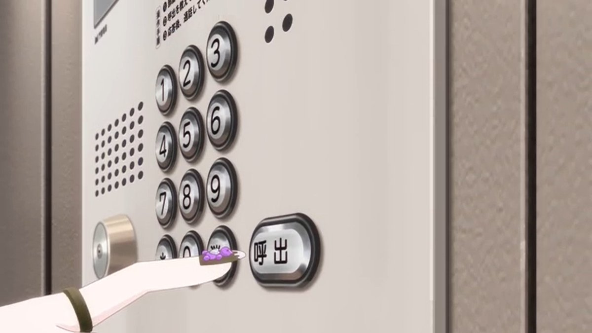
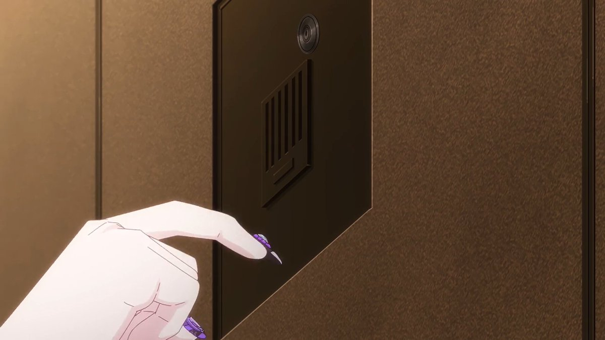

@_______amotan 最后还有kache这个变量在太好了！身为完全的普通人真的让人觉得超级可靠，而且最后的糖糖也已经精疲力竭，只剩下基本生理机能了吧。
主角团一起出去玩的部分也超棒，现实世界有很多过去注意不到的细节正在悄悄改变着超天酱。
最后虽然仓促，但超天酱的结局和后续展开绝对不会让原作党失望的！

主角团一起出去玩的部分也超棒，现实世界有很多过去注意不到的细节正在悄悄改变着超天酱。
最后虽然仓促，但超天酱的结局和后续展开绝对不会让原作党失望的！


今日の深夜にいよいよ12話が始まるけど
あめちゃんがロリポップを刺すとかいう展開になったらどうしよう
自分の尊厳もプライドも名誉も居場所もピの存在もすべてを壊したすべての元凶と言っても過言ではないような人間と対面して
果たしてあめちゃんは平常でいられるのだろうか❓ https://t.co/Lc0utP4tKp
あめちゃんがロリポップを刺すとかいう展開になったらどうしよう
自分の尊厳もプライドも名誉も居場所もピの存在もすべてを壊したすべての元凶と言っても過言ではないような人間と対面して
果たしてあめちゃんは平常でいられるのだろうか❓ https://t.co/Lc0utP4tKp